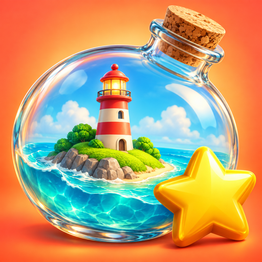
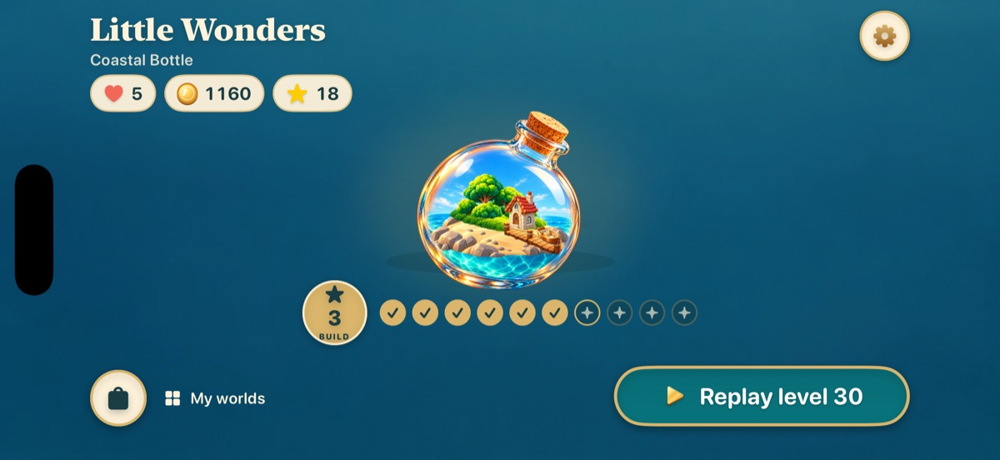
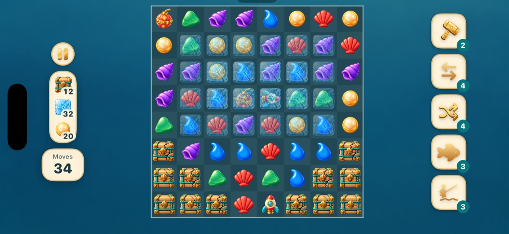

Little Wonders
Match & Build · iPhoneMatch the pieces, build a tiny world.
A cozy match-3 puzzle game. Every level you win earns stars, and stars bring a little world to life, piece by piece.


Swap and match
Swap two neighbouring pieces to line up three or more. Bigger matches make rockets, bombs and prisms.
Six little worlds
180 levels across a coastal bottle, a music box, a teacup garden, a suitcase railway, a snow globe and a storybook woodland.
Build with stars
Spend the stars you win to add each part of the world, then travel on to the next one.
Helpful boosters
A hammer, a free swap, a shuffle, a shark that clears a row and a fishing line that clears a column.
Ads only if you want
No ads interrupt you. Watch a short video only when you choose to, for a free gift.
No account
No sign-in. Your progress stays on your device.
Support
How do lives work?
You have up to 5 lives. Losing a level uses one, and a new one arrives every 30 minutes. You can also pick a life as your free video gift in the Store.
How do I get more stars?
Win levels to earn stars. You can also choose a star as your free video gift in the Store, or buy a star pack.
When do ads appear?
Only when you ask for one. In the Store you can watch a short video and pick a gift: a star, coins or a life, up to 5 times a day. There are no ads between levels.
My purchase didn't arrive
Open the Store and tap Restore Purchases at the bottom. If a family member must approve the purchase (Ask to Buy), it arrives after they approve it. For refunds, use Apple's Report a Problem page.
How do I report an ad?
In the game, open Settings and tap Report an ad. It starts an email that tells us when the last video played, so we can block it with our ad provider.
How do I move my progress to a new phone?
Progress is saved on your device and moves with an iPhone backup or Quick Start transfer. There is no account.
Questions or ideas? lumystudios@yahoo.com